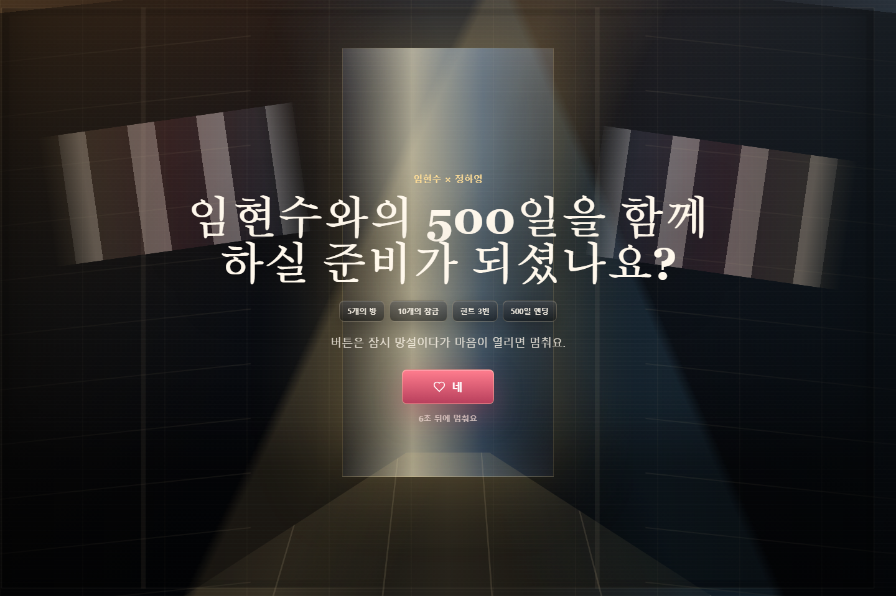
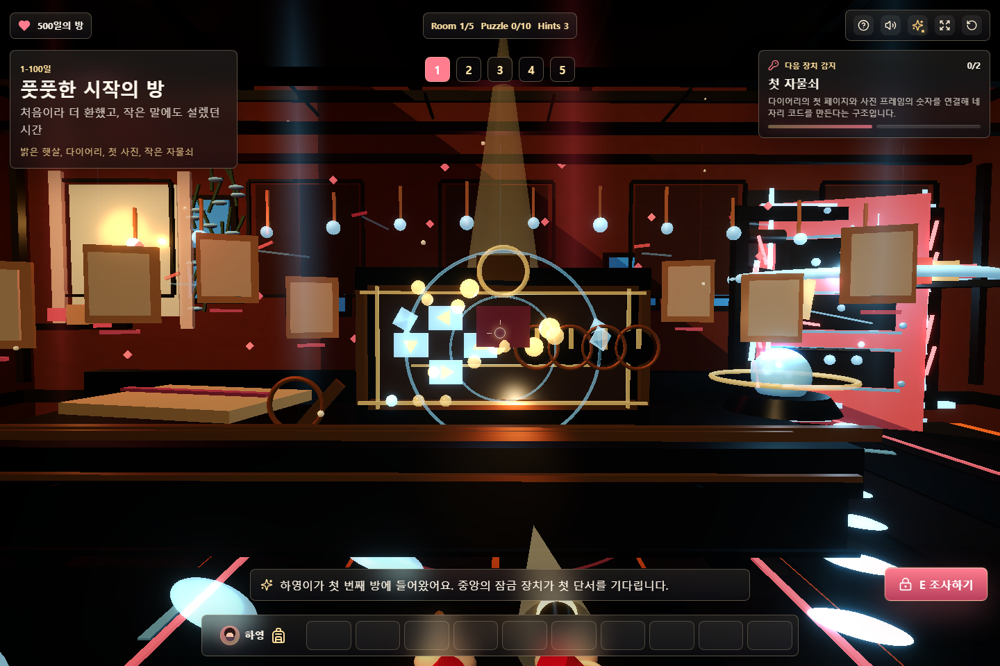

Design Improvement: 500-day Prologue Splash
The next highest-impact improvement was the first impression: make the intro and first room feel like an actual playable escape-game scene, not a decorative web card.
Current State After This Pass


Lazyweb Reference Patterns Used
- Fast Travel Games: immersive VR studio welcome screen with a full-scene background and minimal overlaid text.
- Bigscreen VR: strong first-viewport immersion using a scene transition instead of a plain panel.
- Sundial quest guide: clear quest framing and persistent progress affordances for game-like flows.
- Rooms.xyz challenge result: use modal/confirmation states sparingly so the background still carries the world.
Implemented Ideas
1. Make The Intro A Stage
Added a full-screen corridor, light slit, floor path, and angled memory strips behind the title so the first screen feels like a door into the escape game.
[door light]
title + mission chips
[heart start]
perspective floor path2. Give Room 1 Depth Cues
Added non-blocking arches, photo garlands, bulbs, and light steps so the first room has foreground, middle, and background layers without requiring heavy external 3D assets.
3. Keep The HUD Useful But Secondary
The existing objective HUD stays, but the room itself now has more readable visual interest so the UI is not carrying all the game feel.
Next Design Risks
- Room 1 is denser now; imported GLB props should replace some procedural blocks later.
- The intro is more cinematic, but real couple photos will make it feel less generic.
- Performance remains acceptable in this pass, but imported assets should use Draco/KTX2 compression.